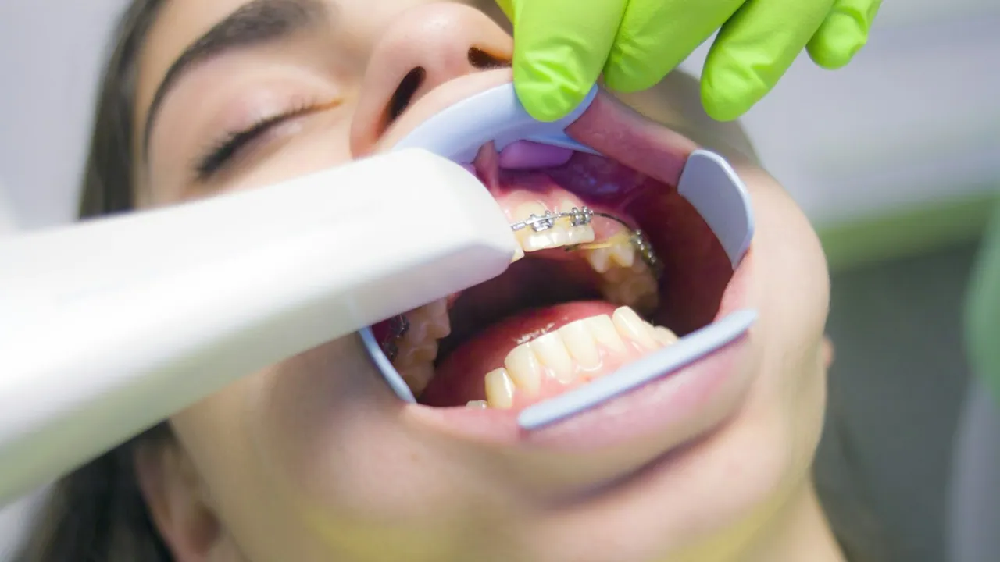

Orthodontics
Straighter teeth, by the method that suits you
Straight teeth are not only about looks: they spread the force of chewing more evenly, are easier to brush, and protect the gums. There is more than one way to get there.

- Fixed and invisibleboth methods under one roof
- X-rays on sitepanoramic and cephalometric
- No age limitchildren, teenagers and adults
There is no right age to start
We treat children, teenagers and adults. In children, starting early can guide jaw growth and avoid longer treatment later. In adults, the deciding factor is usually discretion — and that is where aligners changed things.
The methods
At the first appointment we assess your case and explain which one makes most sense, and why.
-
Fixed braces
Brackets bonded to the teeth and joined by an archwire. The most versatile method: it handles virtually every case, including the complex ones. It does not depend on the patient remembering to wear it, because it does not come out.
Best forComplex cases, children and teenagers
-
Clear aligners
A sequence of transparent, custom-made trays that move the teeth in stages. You take them out to eat and brush, and they go all but unnoticed.
Best forAdults, and mild to moderate cases
-
Retention
The stage nobody should skip. Once straightened, teeth tend to drift back; a retainer — fixed or removable — is what keeps the result.
Best forEvery treatment, once finished
How it works
-
01
Assessment
Examination, panoramic X-ray and cephalometric imaging, all taken here. We establish what needs correcting, and why.
-
02
Plan and quote
We set out the available options, the estimated duration and the cost of each, in writing.
-
03
Fitting
We bond the brace or hand over the first set of aligners, with clear instructions.
-
04
Review appointments
Regular adjustments to keep the movement on track. How often depends on the method.
-
05
Retention
Once alignment is finished we move to the stabilising phase — and keep an eye on it.
Why choose S. Dâmaso
-
In-house laboratory
Fixed and removable prosthetics with short turnarounds and quality control at every stage.
-
Advanced diagnostics
Panoramic X-ray, cephalometric imaging and CT scanning on site, for precise planning.
-
Care that follows through
A multidisciplinary team focused on your comfort at every appointment.
Common questions about orthodontics
How long does it take?
It varies a great deal. Minor corrections can be done in a few months; complex cases take one to two years. We give a realistic estimate at the assessment appointment.
Are aligners suitable for everyone?
No. They are excellent for mild to moderate cases, but there are movements that fixed braces handle better. We would rather tell you that up front than promise what we cannot deliver.
Does fitting a brace hurt?
Fitting does not hurt. For a few days after each adjustment there is tenderness when biting, which passes. It is a sign the teeth are moving.
Can I have orthodontic treatment with inflamed gums?
It is not advisable. We treat the gums first and only then start moving teeth — moving teeth over diseased gums makes the problem worse.
Want to know which method fits?
At the assessment appointment we will show you the options and give you an estimate of time and cost.